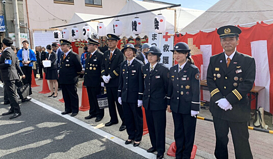
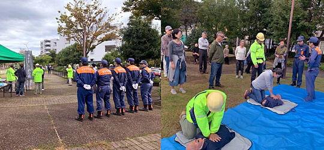

平成22年度に発足した飯能消防団女性消防団は「は組」と愛称が決まりました。私たちは地域防災のために、女性だからこそ発揮できること！を活躍テーマとして、応急手当の指導や様々な広報活動への参加など、積極的に活動してまいります。 女性消防団員を募集しています。
令和2年度「は組」トピックス
◆2020/10/25（日）全団員訓練来月の特別点検に向けて全団員訓練が行われました。良い天気で日差しが暑かったです。新入団員は慣れていない服装規律、観閲の訓練を一生懸命頑張っていました。今回は各個訓練の第二班を女性だけで行いますので、特別点検当日、日頃の訓練成果が発揮できるよう繰り返し練習しました。
◆2020/9/27（月） 新入団員救命講習
は組の普及員が新入団員9名を対象に救命講習を実施しました。今回は新型コロナウイルス感染防止対応の心肺蘇生法なので、傷病者の口にタオルを被せる、人工呼吸は行わないという内容でした。皆さんとても真剣に取り組んでいただき、良い訓練になりました。
◆2020/9/13（日）中継送水訓練
河川から水を引いて、何本もホースを繋げ放水する訓練です。2・3・6分団の訓練の見学と、放水体験をさせて頂きました。水圧も凄いですが、防火服が重くて暑かったのでほんの短時間でもキツかったです。改めて男性団員の大変さを実感しました。
令和元年度「は組」トピックス
◆2020/2/22（土）は組発足10周年記念祝賀会令和2年2月22日という偶然にも2が続く日に、は組10周年記念祝賀会が行われました。団長挨拶の後、は組の10年間の主な活動をまとめたムービーを上映しました。その後会場の皆さんには防災○×クイズに参加して頂きました。は組が10周年を迎えられたのは今まで支えてくださった沢山の方々のおかげであります。ありがとうございます。これからも一層精進して参りますので応援宜しくお願い致します。

◆2020/2/23（日）体力強化訓練
本来は毎年、体力強化訓練はソフトボール大会をしていましたが、昨年の台風19号の影響で岩沢運動公園周辺に流れ着いた流木や側溝に溜まった土砂の除去作業を全分団で行いました。は組もスコップで必死に側溝の土砂をかき出しましたが、その後は身体中が痛く動けなくなりました(^^;;
◆2020/1/11（土）出初式
市役所にて出初式が行われました。今年は、飯能第一中学校の吹奏楽部の皆さんが行進曲を生演奏してくれました。生演奏は迫力があり、自然といつもの行進よりキビキビとした動きになりました。途中でヤングマン、オーメンズ・オブ・ラブの演奏を披露していただきとても良い出初式になりました。
◆2019/12/29（日）歳末警戒巡視
5.6.7分団の歳末警戒巡視に同行させていただきました。巡視の様子を見るのは初めてだったので、分団ごとにやり方が違って面白かったです。非常に寒かったですが、貴重な体験が出来ました。
◆2019/12/21（土）ポスター配布
団員募集ポスターを、店舗に掲示いただける様にお願いしました。飯能駅、東飯能駅周辺で30箇所ほど徒歩で地道に回りました。寒かったですがほとんどのお店で快くOKを頂き、励ましの声をかけてくださる方も居て「がんばろう！」と思いました。ご協力有り難うございました。
◆2019/12/17（火）駿河台大学消防団ガイダンス
駿河台大学消防団ガイダンス毎年恒例の、法学部の学生さんを対象にガイダンスを行いました。説明は、は組の学生団員がスライドを使って行いました。興味を持ってくれた学生さんが沢山いたので入団してくれることを期待します！
◆2019/11/23（土）特別点検
女性団が発足して初めて雨の特別点検でした。雨なので内容が変更され、開会式は屋内訓練場で行い、外で小隊、中隊の部隊訓練を実施後、屋内訓練場で表彰という流れでした。観閲・服装規律訓練はありませんでした。は組は受付と表彰を担当しました。
◆2019/11/17（日）特別点検予習
特別点検本番に向けての予習が行われました。女性4名が小隊の停止間と各個訓練に参加するので6時から朝練がありました。学生団員も夜間集まり自主練習をした成果があり動きも揃ってきました。訓練後、5年以上の団員が表彰を受けました。バッチが1つ増えてやる気もアップしたようです（笑）
◆2019/11/4（火）女性消防団の日県下一斉PR
今年は毛呂山町の流鏑馬祭り会場にて西入間地区の女性団員がPRイベントをしました。ブースでの展示と、救命体操・寸劇を見学させて頂きました。神社伝統の流鏑馬も見ましたが迫力があり感動しました。
◆2019/11/2（日）飯能まつり
飯能まつりの開会式に参加しました。茨城県高萩市長大部勝規様が激励に来て下さいました。市長挨拶と市議会議員の挨拶の後、鏡開きをしました。

◆2019/10/27（日）全団員訓練・交通法規講習
11月の特別点検に向けた訓練を行いました。久々の観閲・服装規律訓練なので戸惑う場面もありましたが、これから本番に向けて練習していきたいと思います。男性の小隊停止間訓練にも2名参加しました。訓練後、屋内訓練場で飯能警察署の方をお招きして交通法規講習を受けました。事故の恐ろしさ、安全運転の大切さを改めて認識しました。
◆2019年10月19日（土）コンフォール21自主防災訓練
火災が発生したという想定で9:30に役員がサイレンを鳴らして避難誘導をしました。その後、マンション中央のこぶし公園に住民の方が整列し、水消火器と簡易担架・心配蘇生法の訓練をローテーションで行いました。訓練後に、手作りカレーライスの炊き出しを頂きました。釜戸で焚いたご飯で大変美味しかったです。

◆2019年10月1日（火）屋内消火栓操法大会
飯能市と、日高市の事業所の自衛消防隊が、屋内消火栓を使い動きの正確さ、火点の的を倒すまでのタイムを競います。今年は飯能の女性チームが3組出場していましたのでチラシを配り勧誘して回りました。
◆2019年9月21日（土） イツモ防災インストラクター研修
埼玉県危機管理防災センターで、イツモ防災キャラバンに参加する為の実演型の研修に参加しました。今回実演したのは・防災サバイバルキッチン・防災グッズ暗記クイズ・バケツリレー・家具転倒防止間違い探し・防災紙芝居。等で小学生を対象とした内容もあるので参考になりました。実践で役立つものばかりでしたので、女性消防団の活動に取り入れたいと思います。
◆2019年9月19〜20日 女性消防団活性化青森大会
一年に一度、全国の女性消防団員が一同に会し、活動発表や情報交換をする活性化大会があります。今年は開催地が青森でした。1日目は活性化大会に参加し、2日目は視察研修という事で青森を代表する『ねぶた』が多数展示してあるねぶたの家ワ・ラッセを訪問しました。
◆2019年9月17日（火）団員救命講習
毎年秋に普通救命講習更新者を対象に応急手当普及員の団員が指導します。仕事・学校が終わった後の夜7時〜10時までの長丁場は大変ですが皆真剣に取り組んでいました。は組からは新入団員が一名救命講習を受講しました。
◆2019年9月8日(日) 加治東地区合同防災訓練(加治東小学校)
9月に入りましたが、気温が非常に高く真夏日でしたが、約250人もの方々が加治東小学校での訓練に参加しました。応急手当訓練は4班に分かれて実施し、汗だくになりながらも、参加いただいた方々には熱心に取り組んで頂きました。地域の防災訓練で、これだけの人数が集まるのは素晴らしいと思います。皆さんの防災意識の高さに感心してしまいました。

◆2019年9月1日(日) 自主防災訓練(双柳小学校、飯能第一小学校)
今年度は双柳地区と富士見地区が同日に実施となりましたので、は組は二ヶ所に分かれて自主防災訓練に参加しました。男性団員は初期消火の指導と消防車両の展示、は組と普及員の男性団員は心肺蘇生法と応急手当を担当しました。当日は暑さも厳しかったですが、多くの方が参加し、積極的に実技を体験して頂きました。
◆2019/08/18 一丁目クラブ自主防災訓練
一丁目クラブの防災訓練に参加しました。7時頃から避難訓練が始まり、応急手当訓練後、炊出し訓練を実施しました。近隣住民が実際に自治会館に避難したという想定で実施し、代表者から順番に出される指示に従い、皆で協力してテーブルを並べたり味噌汁を取りに行ったりしました。最後に非常食にお湯を注ぎ待つこと20分、美味しい？α米の赤飯を試食し無事訓練終了となりました。
◆2019/07/27 消防庁本所防災館
は組4名で、消防庁の防災館を訪問し、約2時間の体験ツアーを申し込みました。今回選択したのは、煙・地震・暴風雨・消火の四体験です。特に印象に残ったのは地震体験で、過去の東日本大地震や阪神淡路大地震の揺れを再現したものも体験しました。机の脚にしがみつくのがやっとで、吹っ飛ばされそうになりました。揺れ出すと立ったまま全く動けず、机の下に潜る事すら非常に困難で、改めて震度7の凄まじさを体感しました。本当に恐ろしく信じられない揺れでした。実際に防災体験をして、災害への備えや日頃の訓練がとても大切だと分かりました。
◆2019/07/21 新入団員基礎教育訓練
今年度入団した新入団員が、署員の方に基本の動作・ロープ結索法・搬送法の実技を教わりました。実際にホースをロープで固定して吊り上げる訓練をしましたが、基礎的な結索方法なのにとても難しかったようです。何度お手本を見ても頭の中が(????)でしたが、四苦八苦しながら何とか成功…。ホースに水が入る前と、使った後で結ぶ方法が違う事も知らなかったので貴重な体験でした。
◆2019/07/13 イツモ防災基礎講座
さいたま市にある埼玉県危機管理防災センターに研修に行ってきました。この講座を受けると、登録の後イツモ防災インストラクターとして出前講座などが開催できるようになります。イツモ防災は普段から生活の中に災害に備え防災を取り入れていくという考え方です。身近な物を使った家具の固定方法、簡易トイレの作り方、必要な非常食と水の備蓄量などを教わりました。指導する際のアドバイスもあり、とても分かりやすく勉強になりました。今後の防災訓練等に取り入れていけたら良いと思います。
◆2019/07/07 上直竹自主防災訓練
今年は男性団員が中継送水訓練の為、女性団員だけで訓練の指導をする事になっていましたが、5分団の団員の方にお手伝い頂きとても良い訓練が出来ました。参加者のほとんどは、毎年訓練に参加されているので今回はいつもと違う内容にしてみました。竹竿担架を作った後、意識が無くぐったりしている人を起き上がらせ、更に持ち上げて担架に乗せるところから皆さんで協力して実践して頂きました。実際やってみると、倒れている人を起こすのは大変難しいという事が分かりました。
◆2019/07/06 埼玉県消防協会第2ブロック連絡協議会女性消防団員研修会
毎年埼玉県第2ブロックの女性団員が集まり、活動発表や情報交換をします。最初に、株式会社危機管理教育研究所の国崎信江先生のご講演がありました。［女性視点からの地域防災］という演題でした。大規模災害が起きた時、私達女性団員は何をするべきか？何が出来るのか？というお話でとても勉強になりました。また、避難所では盗難や喧嘩、犯罪などが多発していたという現実を知りました。火災や応急手当てだけでなく、大災害が起きた時にどう対応すべきかが私達の今後の課題だと思いました。
◆2019/05/25・26 ツーデーマーチ
今年もメイン会場の飯能市役所のブースにて、応急手当指導、防災釣りゲームをしました。とても暑い二日間でしたが、たくさんの方が体験に来てくれました。
◆2019/05/19全団員訓練
新入団員一名も加わり、入場行進・観閲・服装規律の訓練を行いました。まだ慣れていないので、基本の動作を教えながら皆んなで繰り返し練習しました。
◆2019/04/06 団本部歓送迎会
カミカミyaさんにて、は組（女性消防団員）発足時からずっとお世話になった前梨木団長の送別会と、今年度新たには組に加わった新入団員の歓迎会を行いました。は組メンバーも全員参加する事が出来て良かったです。梨木さん、本当にありがとうございました。
過去の活動内容はこちら